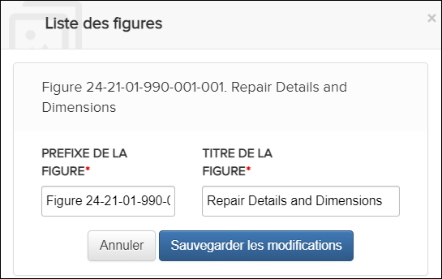
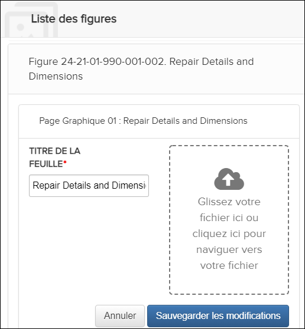

Non applicable pour Pinpoint Standalone Light.
Les utilisateurs disposant de l'autorisation Peut créer du contenu peuvent modifier les figures et les feuilles. L'édition de figures ou de feuilles est disponible à partir de la boîte de dialogue Liste des figures.
Pour ouvrir la boîte de dialogue Liste des figures, procédez
comme suit:
- Entrez en mode création. Faire référence à Entrer en mode de création.
- Dans l'en-tête du Contenu, sélectionnez l'icône
 Liste des figures.La boîte de dialogue Liste des figures apparaît. Par example:
Liste des figures.La boîte de dialogue Liste des figures apparaît. Par example:
Liste des figures Dialogue
Modifier une figure
- Dans la boîte de dialogue Liste des figures, passez
la souris sur le nom de la figure que vous souhaitez modifier. Ces options
apparaissent:

- Cliquez sur l'icône
Modifier la figure. Vous pouvez modifier les champs PREFIXE DE LA FIGURE and TITRE DE LA FIGURE pour une figure. Par example:

Liste des figures Dialogue - Modifier la figure
- Après avoir effectué vos modifications, cliquez sur le bouton .
Modifier une feuille
- Dans la boîte de dialogue Liste des figures, cliquez sur le titre de la figure pour afficher les feuilles de la figure.
- Survolez le nom de la feuille que vous souhaitez modifier. Ces options
apparaissent:

- Cliquez sur l'icône
Modifier la page graphique. Vous pouvez modifier le titre de la feuille, remplacer le graphique de la feuille ou faire les deux. Par example:

Liste des figures Dialogue - Modifier la feuille
- Après avoir effectué vos modifications, cliquez sur le bouton .Remarque : La modification d'une feuille existante et son remplacement par une nouvelle image généreront la vignette et l'affichage dans le volet de contenu Pinpoint.